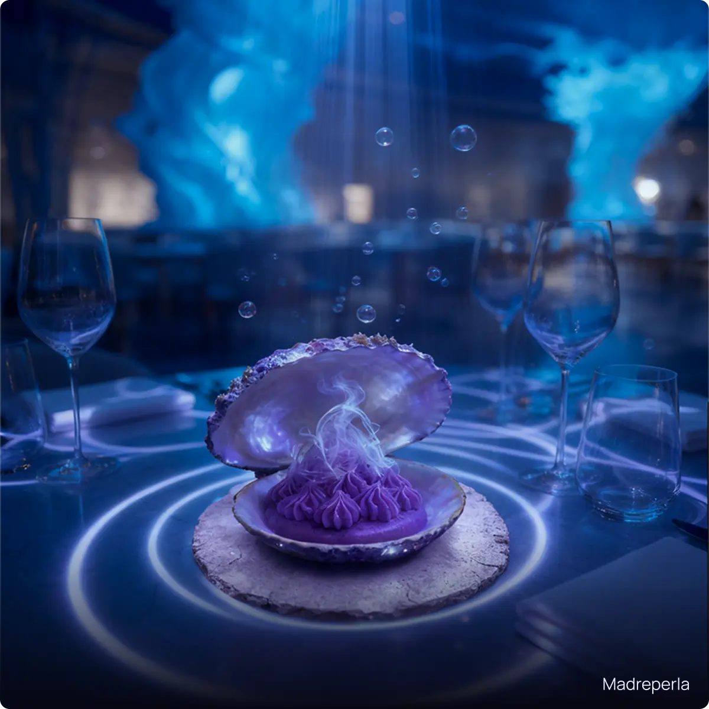
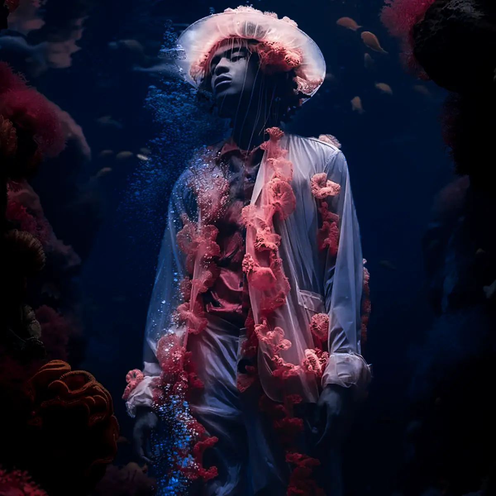

Le nostre serate speciali sono rituali sensoriali in cui gastronomia, suono e tecnologia si uniscono per
creare
esperienze irripetibili.
Ogni evento è un incontro: tra elementi, emozioni e memorie che riaffiorano dal profondo. Un invito a vivere
il
mare in una forma diversa, ogni volta unica.